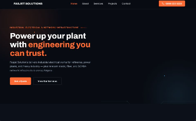

Fasjet Solutions — Company Website
A corporate website for an industrial electrical and network infrastructure company, with clear service pages and quote-request calls to action.
Web DevelopmentResponsive DesignVercel
Visit live site →